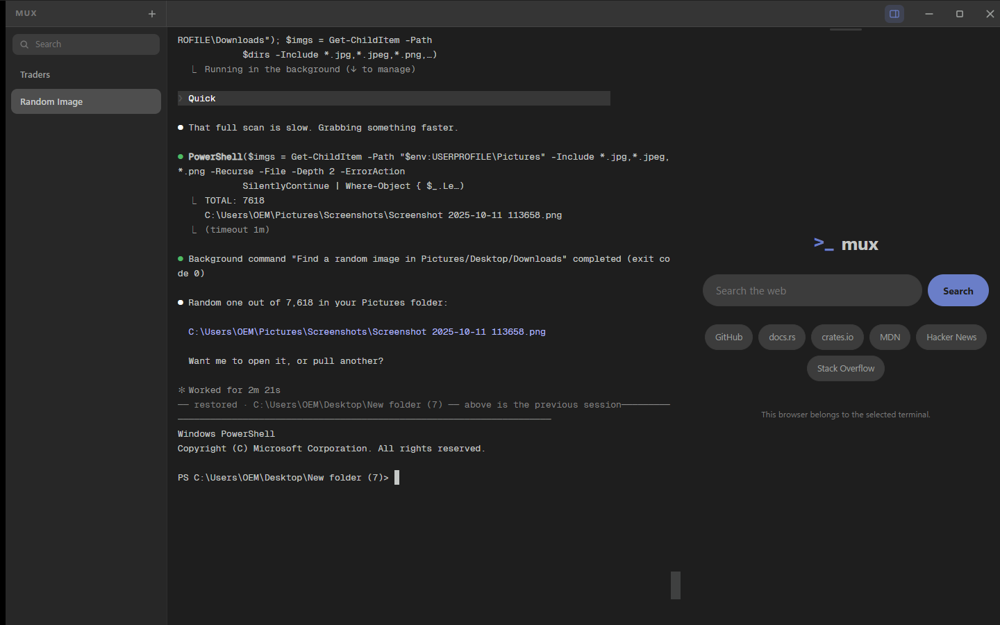

A terminal multiplexer for Windows. Real pseudoconsoles, live idle and busy lights read from the process table, and a browser beside every shell.
PS> irm
https://raw.githubusercontent.com/hunterjreid/mux/master/install.ps1 |
iex
Windows 10 1809 or newer. Installs per user, no administrator rights.

Every terminal is a real ConPTY running a real shell. A build you started in one keeps building while you work in another, and coming back shows its current screen rather than a blank one.
A shell at a prompt has no child processes; one running a command does. So a compile that has been silent for a minute still reads as busy, which guessing from recent output gets wrong.
Each terminal owns its own webview, so switching terminals switches the page. Scroll position, forms and logins are all still there, because nothing re-navigated.
Closing the window remembers your terminals, what you called them, the directory each was working in and what it had printed. Opening it again puts all of it back.